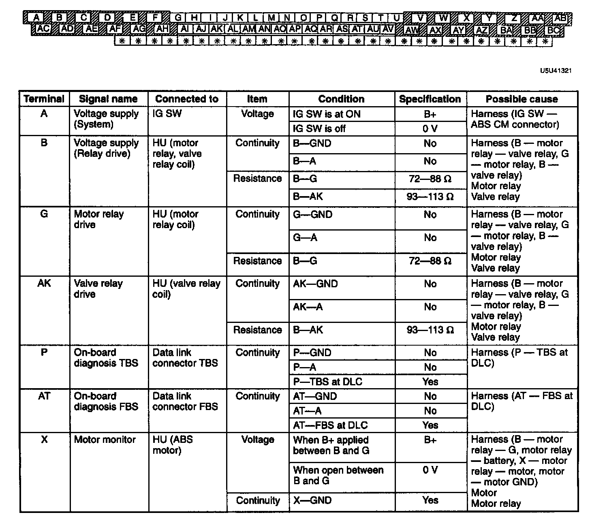
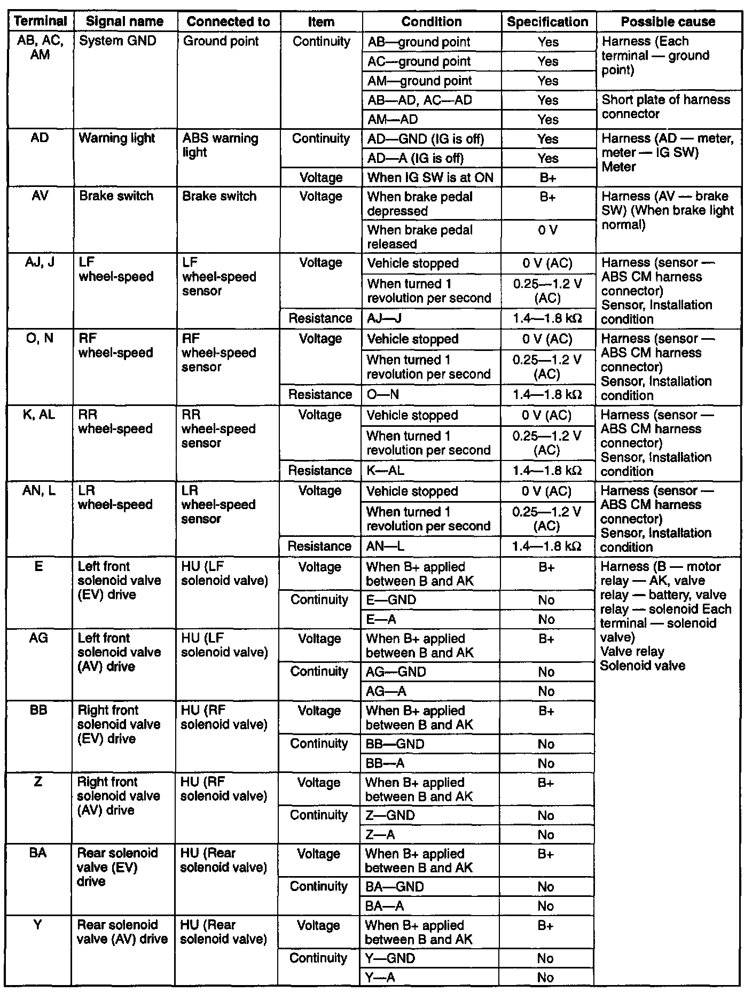

Pinout Values and Diagnostic Parameters
ABS HARNESS AND INPUT SIGNAL INSPECTIONCaution:
^ Disconnecting and connecting the ABS CM connector must be done with the Ignition switch off.
^ When checking the harness connector, the Special Service Tool (SST) must be used.

1. Disconnect the ABS CM connector and connect the SST to the harness connector with the ignition switch OFF.


2. Attach the tester leads to the SST to inspect for voltage, continuity, or resistance, referring to the table.
Note: Voltage is measured between applicable terminal and GND terminal of ABS CM harness connector.